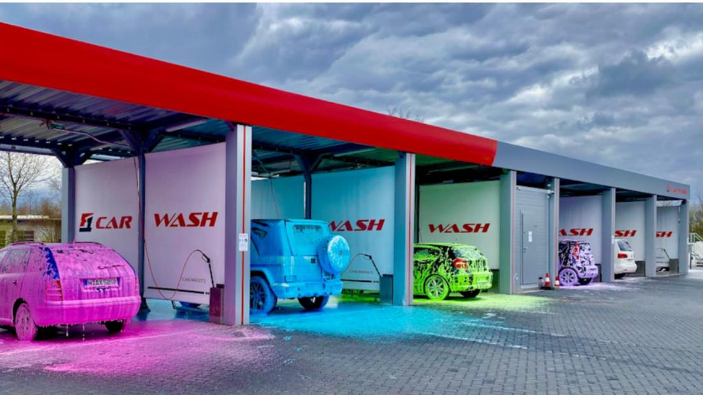
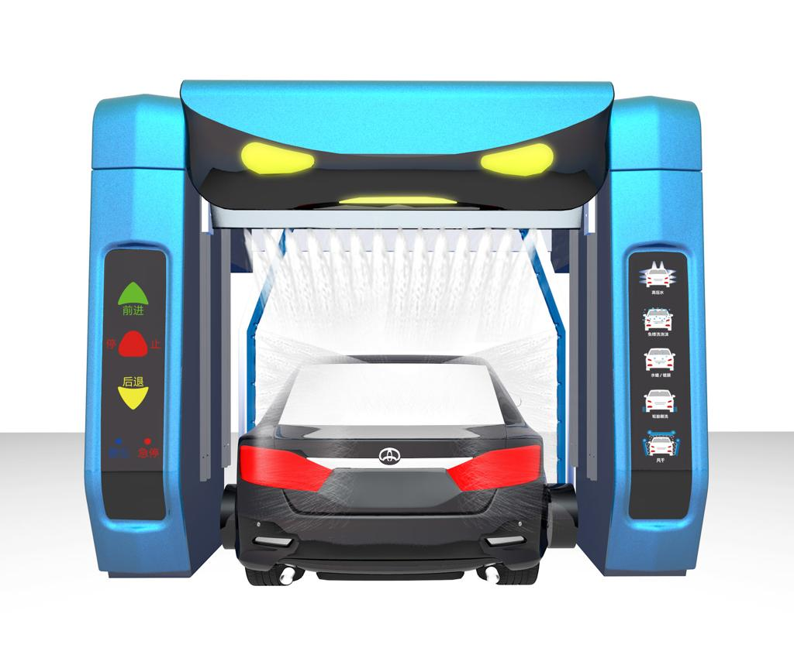
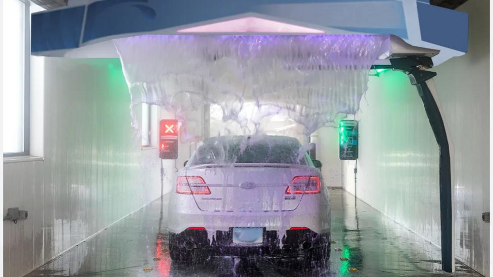
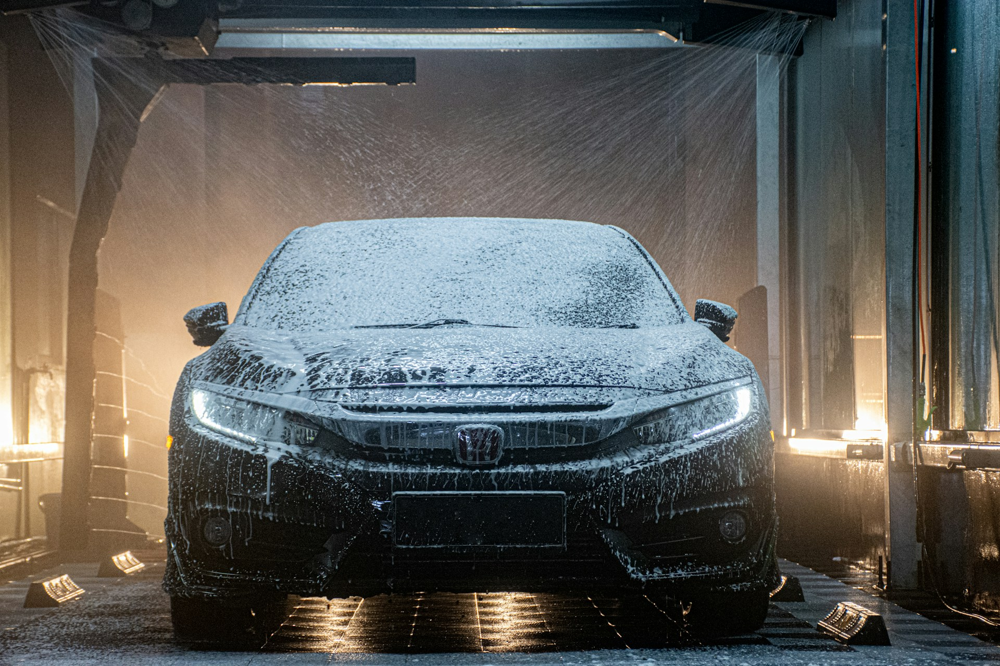
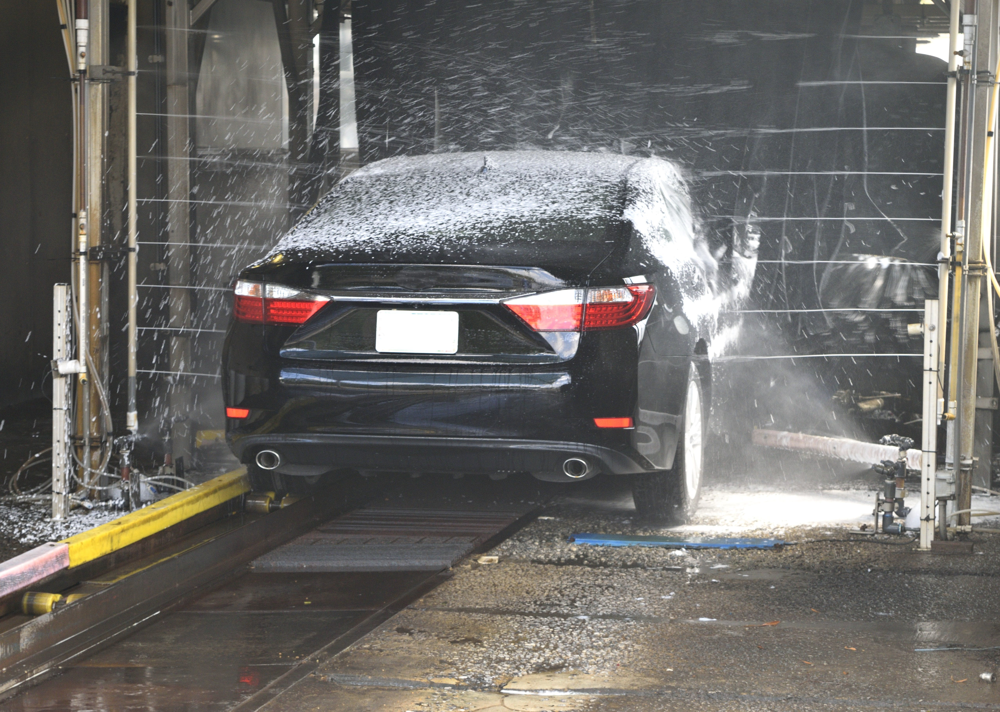
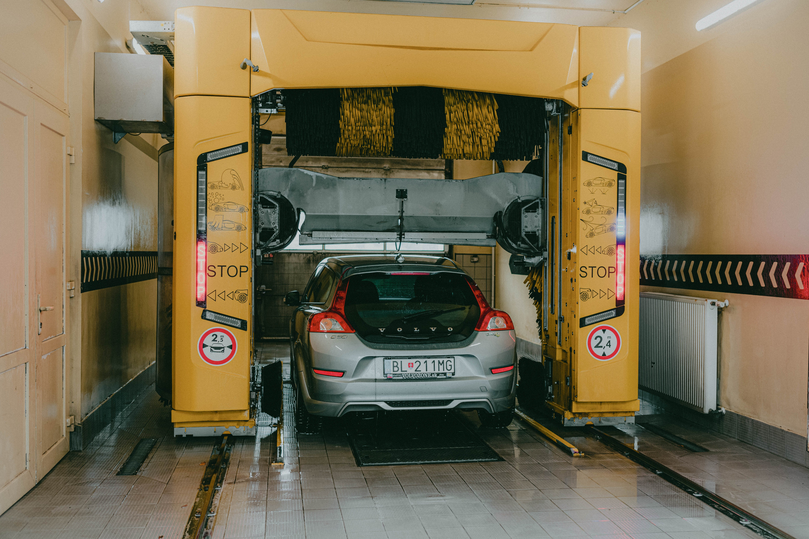

Lave-Auto
Avantages :
- Entretenir la voiture
- Plus propre pour la voiture
- Gagnez du temps seulement cinq minutes
- Prévention de la rouille des voitures
- Convivial et maintenir la preuve
- Facilité de paiement et d'utilisation
- Blanchisserie à tout moment 24/7
données techniques
| No. | Descriptions des fonctions | Détails de la marque | Remarques |
|---|---|---|---|
| (1) | Le niveau de protection de l'eau est IP67 | Servomoteur Delta de Taïwan | Allemagne pinfl |
| (2) | Il peut afficher une variété de modes de lavage de voiture, une indication de stationnement, un affichage des défauts, un affichage de l'état, etc. | Moteur de séchage à l'air étanche Sino-Intlund |
Japon NSK Allemagne PEPPERL+FUCHS |
| (3) | Détecter avec précision la position du corps, déterminer la plage de nettoyage | Système de servomoteur Delta de Taiwan Écran LCD Delta de Taiwan Pepperl+Fuchs Allemagne |
France Schneider Delta de Taïwan |
| (4) | Contrôlez avec précision la quantité de mousse, de solution colorée sans rinçage et de cire d'eau de revêtement | Capteur photoélectrique à ultrasons P+F Pepperl+Fuchs P+F Japon Relais Omron Français Schneider | Delta de Taïwan |
| (5) |
1.Épaisseur jusqu'à 4mm, 2.Norme internationale Q235, 3.Test au brouillard salin, grade dix 4 mm, Q235 |
Contacteur taly nouvelle pompe doseuse de liquide Dotz cadre en acier galvanisé à chaud buse en acier inoxydable 416 haute résistance | Allemagne PEPPERL+FUCHS |
| (1) | Type HP-260 (lavage de voiture sans contact 360) | HP-260 (STANDARD) | Spécifications: Modèle |
| 1.1 | Descriptions / Lave-auto sans contact 360 |
LXLXH=3300mm*1100mm*1000mm LXLXH=8180mm*3680mm*3500mm LXLXH=2500mm*1600mm*2000mm |
Dimensions de la machine ESPACE D'INSTALLATION STATION D'ALIMENTATION Puissance principale Puissance totale Pression de l'eau |
| 1.2 | Systèmes intelligents sans pilote | Triphasé 380 V 50 Hz | Arrivée d'air |
| 1.3 | Technologie intelligente 360. | Max : 18,5 kw ; fonctionnement maximal : 18,5 kw 70-120Bar |
Type de véhicule Taille de lavage |
| 1.4 | Système de mélange chimique intelligent. | voiture/SUV/Coatch dans 10 sièges LXWXH=2300mm*2500mm*2050mm | Vitesse de lavage |
| 1.5 | Système de suspension innovant, rails sans résistance | Lavage rapide : 3'12", Premium | Consommation d'énergie |
| 1.6 | Système de séchage rapide intégré unique | 0.65kwh | produits chimiques |
| 1.7 | Système d'alarme de sécurité vocale numérique | 7ml/12ml | consommation |
| 1.8 | Système d'auto-vérification défectueux Système antigel à une clé | 165L | consommation d'eau |